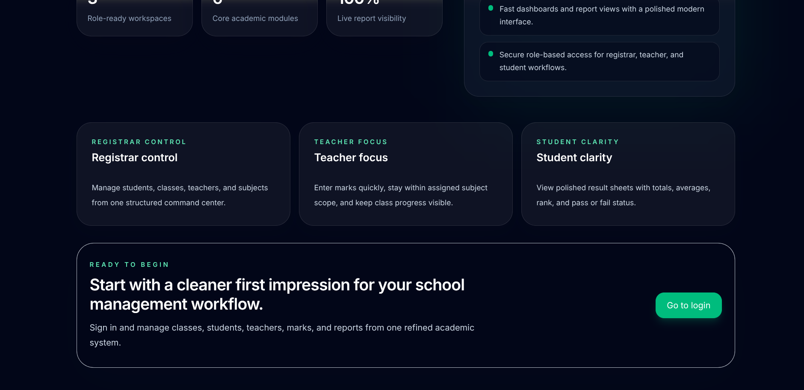

Haramaya University
College of Computing and Informatics
Department of Software Engineering
Course: Advanced Database
Student Academic Record Management System
Database Design, SQL Implementation, and Web Application Documentation
| University | Haramaya University |
|---|---|
| College | College of Computing and Informatics |
| Department | Department of Software Engineering |
| Course | Advanced Database |
| Date | April 15, 2026 |
Group Members
| Name | ID |
|---|---|
| Chala Gobena | 0964/16 |
| Amenti Liben | 0686/16 |
| Boka Jiregna | 0931/16 |
| Damoze Motuma | 0995/16 |
| Jalane Feyisa | 1663/16 |
| Dawit Marsha | 1026/16 |
Abstract
This project presents a web-based Student Academic Record Management System developed to solve the common problems of manual result preparation in schools. The system stores student, teacher, class, subject, and mark information in a structured relational database and generates result reports automatically. It was developed using Next.js for the web interface and Supabase PostgreSQL for data storage, authentication, and security.
The system allows administrators to register students and teachers, define subjects and classes, assign homeroom responsibilities, and manage academic structure. Teachers can enter marks only for the subject and classes assigned to them, while students can view only their own academic report. SQL views are used to compute total marks, average, rank, and pass or fail status dynamically from the stored marks.
The main value of the project is that it combines database theory with a practical web application. The design applies normalization, table relationships, constraints, SQL functions, and row-level security policies. The result is a simple but realistic academic information system that is scalable, easier to maintain, and more reliable than manual workflows.
Table of Contents
- Abstract
- Introduction
- Requirement Analysis
- System Design
- Entity Relationship Diagram
- Database Design and Normalization
- Implementation
- Security and Exception Handling
- Testing and Validation
- System Development and Screenshots
- Conclusion and Recommendations
- Appendix
1. Introduction
Student result management is one of the most important activities in school administration. Every semester, schools collect subject marks, prepare summaries, rank students, determine pass or fail status, and present reports to students and parents. When this work is handled manually by paper documents or disconnected spreadsheets, it becomes difficult to maintain consistency and accuracy.
Manual systems usually create four major problems. First, totals and averages can be calculated incorrectly. Second, the same information may be repeated in many files, which leads to inconsistency. Third, it is difficult to control who is allowed to see or edit the data. Fourth, the process does not scale well when the number of students, classes, or subjects increases.
To solve these problems, this project introduces a Student Academic Record Management System supported by a relational database and a web interface. The system records the core academic data only once and generates reports directly from the database. This approach improves data quality, security, and speed of report generation.
1.1 Problem Statement
Schools need a secure and reliable way to manage student academic records and generate result sheets without depending on manual calculations or unstructured files. A database-driven solution is necessary to reduce errors, maintain relationships between academic entities, and support future growth.
1.2 General Objective
To design and implement a web-based student result management system that stores academic data in a normalized relational database and generates result reports dynamically.
1.3 Specific Objectives
- Analyze the academic result management problem and identify system requirements.
- Design an ER model and relational schema with proper keys and constraints.
- Apply normalization principles up to Third Normal Form.
- Implement SQL objects such as tables, views, functions, and policies.
- Develop a web application with different access levels for admin, teacher, and student.
- Generate reports containing subject marks, total, average, rank, and status.
1.4 Scope of the Project
The project covers student registration, teacher registration, subject setup, class setup, mark entry, and report generation. It does not include attendance management, finance, or communication modules. The present system is focused only on academic record processing.
2. Requirement Analysis
Requirement analysis was based on the course project guideline and on the real needs of a school environment. The system was designed around the main academic roles and the data they interact with.
2.1 Functional Requirements
| Module | Required Function | Implemented in the Project |
|---|---|---|
| Student Management | Register student and store identity and academic placement | Admin creates student records with name, gender, ID, grade, academic year, semester, and class. |
| Subject Management | Store subject list and total marks | Subjects are stored in a separate table with unique names and configurable total mark. |
| Teacher Management | Store teachers, subject assignment, and class assignment | Each teacher is linked to one subject and one or more classes through a bridge table. |
| Class Management | Create classes and assign homeroom teacher | Classes are stored independently and may have an optional homeroom teacher. |
| Mark Management | Store marks and validate range | Marks are recorded per student and subject using a composite key and a 0 to 100 check constraint. |
| Report Generation | Generate total, average, rank, and pass/fail | Views and application logic compute summaries dynamically. |
2.2 Non-Functional Requirements
- The system should be simple to use through a web browser.
- The system should prevent unauthorized data access.
- The system should support adding more subjects and classes in the future.
- The system should maintain data integrity through database constraints.
- The system should provide readable academic reports.
2.3 Users and Responsibilities
| User | Role in the System |
|---|---|
| Admin | Manages students, teachers, classes, subjects, and accounts. |
| Teacher | Enters marks only for the assigned subject and assigned classes. |
| Student | Views only personal result information and academic standing. |
2.4 Business Rules
- Each student is identified by a unique student ID.
- Each teacher is identified by a unique teacher ID.
- Each subject has a maximum mark of 100 by default.
- Marks below 50 are considered Fail at the subject level.
- Teachers are restricted to their teaching scope.
- Rank is generated automatically from stored marks.
3. System Design
The system was designed as a web application with a clear separation between interface, application logic, and database logic. The presentation layer is built using Next.js server components and form actions. The database layer is implemented in Supabase PostgreSQL using tables, views, functions, and security policies.
3.1 High-Level Architecture
| Layer | Description |
|---|---|
| Presentation Layer | Login page, dashboard pages, input forms, tables, and report screens. |
| Application Layer | Next.js server logic, role checks, queries, form handling, and report assembly. |
| Database Layer | PostgreSQL tables, views, stored functions, indexes, and row-level security policies. |
| Authentication Layer | Supabase authentication linked to profiles with admin, teacher, and student roles. |
3.2 Major Modules
- Authentication and role resolution
- Student management
- Teacher management
- Class and subject management
- Mark entry
- Report generation
- Password change workflow
3.3 Use Case Summary
| Actor | Use Cases |
|---|---|
| Admin | Create student account, create teacher account, create class, assign homeroom teacher, create subject, view reports. |
| Teacher | Log in, view assigned subject, enter mark, update mark, review class report. |
| Student | Log in, open dashboard, view own result report, change password. |
4. Entity Relationship Diagram
The following ER diagram is based directly on the implemented database schema. It shows the main entities, important attributes, primary keys, foreign keys, and the relationships between academic data objects.
5. Database Design and Normalization
The database was designed to avoid redundancy, preserve integrity, and support reporting. The main design approach was to separate academic entities into different tables and connect them through foreign keys.
5.1 Relational Schema
| Table | Primary Key | Main Attributes and Relationships |
|---|---|---|
| subjects | subject_id | subject_name, total_mark, created_at |
| teachers | teacher_id | name, subject_id references subjects |
| classes | class_id | class_name, homeroom_teacher_id references teachers |
| teacher_class_assignments | (teacher_id, class_id) | bridge table between teachers and classes |
| students | student_id | name, gender, grade, academic_year, semester, class_id references classes |
| marks | (student_id, subject_id) | mark, created_at, references students and subjects |
| profiles | id | full_name, login_id, role, student_id, teacher_id |
5.2 Primary Keys and Foreign Keys
- Simple primary keys are used for subjects, teachers, classes, students, and profiles.
- Composite primary keys are used for marks and teacher_class_assignments.
- Foreign keys connect teacher to subject, class to homeroom teacher, student to class, and mark to student and subject.
- Profile rows reference either a student or a teacher depending on the role.
5.3 Constraints
- subject_name is unique.
- class_name is unique.
- gender is limited by a check constraint.
- mark between 0 and 100 is enforced in the marks table.
- Profiles use a role-link check to stop invalid combinations.
5.4 Normalization
First Normal Form (1NF)
All tables store atomic values. There are no repeating groups inside a single row. For example, student subjects are not stored in one column; they are stored through the marks table.
Second Normal Form (2NF)
Partial dependency is removed. In the marks table, the only non-key attribute is the mark, and it depends on the full composite key of student_id and subject_id.
Third Normal Form (3NF)
Transitive dependency is minimized. Teacher information is stored in the teachers table, subject information is stored in the subjects table, and class information is stored in the classes table. Derived values such as total, average, and rank are not stored in student rows; instead they are computed using views.
6. Implementation
The implementation combines web development tools with SQL database objects. The frontend and server logic are written in TypeScript and executed through Next.js, while the persistent data model and reporting calculations are implemented in PostgreSQL.
6.1 Development Tools
| Tool | Purpose |
|---|---|
| Next.js | Builds the web interface, routes, and server-rendered pages. |
| React | Creates reusable UI components. |
| TypeScript | Provides type safety in application code. |
| Supabase | Provides PostgreSQL database, authentication, and row-level security. |
| Tailwind CSS | Styles the interface. |
6.2 Important SQL Objects
| SQL Object | Purpose |
|---|---|
| student_subject_report view | Shows subject-level marks and pass/fail status for each student. |
| student_report_summary view | Calculates total, average, and rank using aggregation and window functions. |
| resolve_login_email() | Resolves visible login ID to the hidden email used in authentication. |
| create_student_with_account() | Creates student row, auth row, and profile row in one workflow. |
| create_teacher_with_account() | Creates teacher, class assignments, auth row, and profile row. |
| change_own_password() | Allows authenticated users to change their password securely. |
6.3 Example SQL for Table Creation
6.4 Example SQL for Report Computation
6.5 Computation Logic
- Total is calculated using SQL SUM(mark).
- Average is calculated using SQL AVG(mark) over stored subject marks.
- Rank is calculated using SQL RANK() OVER(...).
- Subject status is Pass when mark is 50 or above, otherwise Fail.
- Overall report status is determined from the student average in the application interface.
7. Security and Exception Handling
A strong point of the system is that security rules are enforced both in the application code and in the database. This is important because academic data is sensitive and should not be visible to unauthorized users.
7.1 Role-Based Access
| Role | Access Rules |
|---|---|
| Admin | Can manage students, teachers, subjects, classes, and see institutional reports. |
| Teacher | Can read assigned students and classes, and can insert or update marks only within assigned scope. |
| Student | Can read only personal profile and personal result data. |
7.2 Row-Level Security Policies
The database enables row-level security on the main tables. Policies are defined for profiles, teachers, classes, subjects, students, marks, and teacher_class_assignments. This means the database itself checks which rows a user may select, insert, or update.
7.3 Validation Rules
- Mark values outside the range 0 to 100 are rejected.
- Duplicate login IDs are blocked.
- Teachers cannot save marks for a subject that is not assigned to them.
- Teachers cannot save marks for students outside their assigned classes.
- Password changes require the correct current password.
7.4 Exception Handling
Stored functions raise readable database exceptions for invalid operations such as duplicate IDs or unauthorized account creation. On the web interface, these errors are displayed using alert messages or redirects with error parameters. This approach gives the user immediate feedback and protects the integrity of the stored data.
8. Testing and Validation
The implemented system was reviewed by checking the expected behavior of the major workflows. Testing focused on input validation, relationship consistency, access control, and report computation.
8.1 Test Cases
| Test Scenario | Expected Result |
|---|---|
| Create a subject with an existing name | The system rejects the duplicate subject and shows an error. |
| Insert a mark greater than 100 | The database check constraint rejects the value. |
| Teacher enters mark for unassigned subject | The operation is rejected by application logic and database policy. |
| Student opens another student's report | The system blocks access and limits the student to personal data only. |
| Admin creates a new student account | The student row, auth row, and profile are created successfully. |
| Open report page after entering marks | Total, average, rank, and subject status are recalculated correctly. |
8.2 Validation Summary
The database design and application logic support the expected project objectives. Core relationships are preserved by foreign keys, invalid inputs are blocked by constraints, and reporting values are calculated dynamically rather than copied manually. This improves consistency and reduces the risk of stale or conflicting results.
9. System Development and Screenshots
The web application includes separate workflows for login, administration, mark entry, and result reporting. The following screenshots show the current state of the interface.


9.1 Interface Observations
- The login page supports all three roles using one access form.
- The public landing page explains the value of the platform before sign-in.
- The system uses clear card layouts, tables, and readable forms.
- Reports are shown in a structured format that matches academic use cases.
10. Additional Screenshots
The following screenshots provide more evidence of the implemented workflows, including student registration, teacher mark entry, class performance reporting, and the final student result sheet.


11. Conclusion and Recommendations
The Student Academic Record Management System successfully applies advanced database concepts to a practical academic problem. The project uses a normalized relational schema, primary and foreign keys, constraints, views, SQL functions, and role-based security to manage academic information in a reliable way.
Compared to manual workflows, the system improves consistency, reduces calculation errors, and makes it easier to control access to data. Because reports are derived from the stored marks at runtime, the system also avoids duplication of calculated values and keeps reporting logic centralized.
Recommendations
- Add downloadable PDF export for student reports.
- Add historical archiving for multiple academic years and semesters.
- Add teacher comments and behavioral remarks in the result report.
- Add more screenshots for the admin dashboard and reporting pages before submission.
Appendix
Appendix A: Main Database Objects
| Category | Objects |
|---|---|
| Tables | subjects, teachers, classes, teacher_class_assignments, students, marks, profiles |
| Views | student_subject_report, student_report_summary |
| Functions | current_role, current_teacher_subject_id, current_teacher_class_ids, resolve_login_email, build_hidden_login_email, create_student_with_account, create_teacher_with_account, change_own_password |
| Security | Row-level security policies on profiles, teachers, classes, subjects, students, marks, and assignments |
Appendix B: Team Signatures
| Name | Role | Signature |
|---|---|---|
| [Insert Name] | Team Leader | |
| [Insert Name] | Database Designer | |
| [Insert Name] | Documentation Lead |